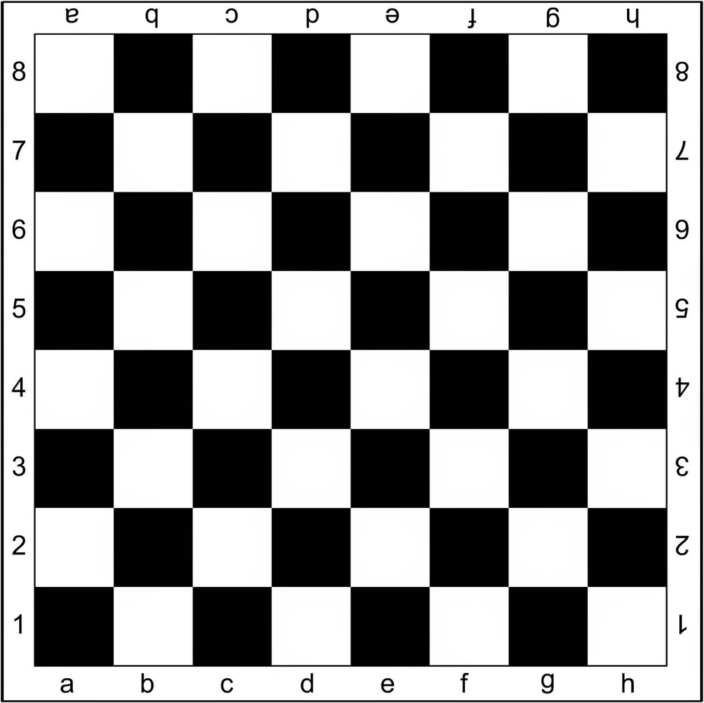
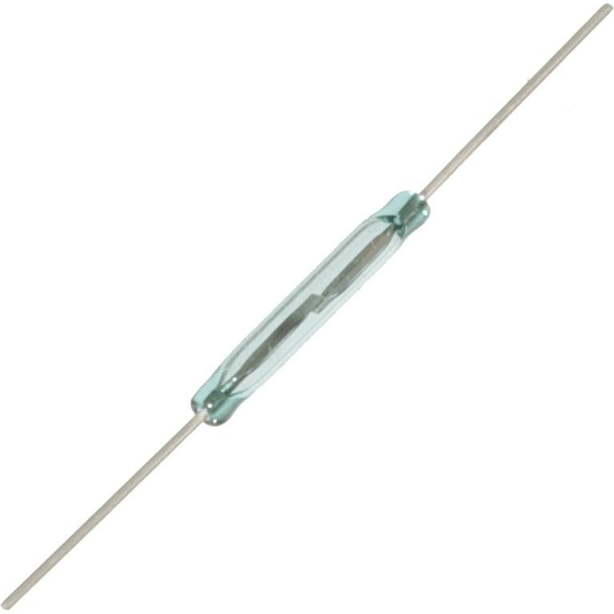
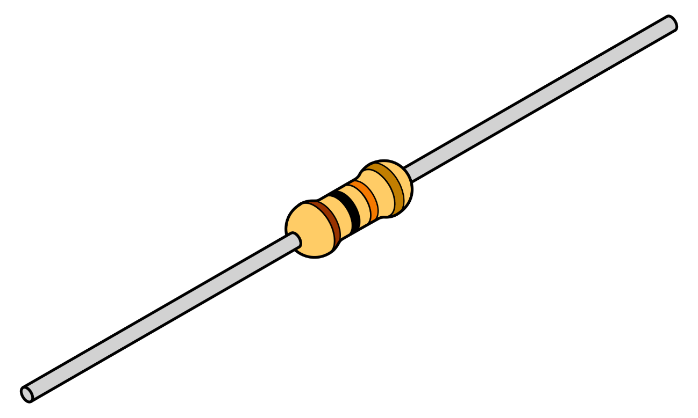

Uma Breve Introdução
Para pensar de que forma iríamos articular o nosso projeto usamos
nossos conhecimentos correlatos a partidas de xadrez (descrito no vídeo
na página inicial), sensores e Arduino. Bem, um tabuleiro de xadrez é
dividido em 64 quadrados chamados casas, logo, concluímos que seriam
necessários 64 sensores, um para cada “casa” do tabuleiro de xadrez.
Também um Arduino com no mínimo 16 pinos de entrada e saída(input e output),
um resistor numa média de 10k de resistência e uma fonte de energia.
Deixamos claro que há outros meios de se fazer o sensoriamento.
Como Funciona?

Para saber onde cada peça foi jogada, teríamos que pôr um pequeno ímã fixo dentro
de casa peça, já que que os sensores (Reed-switch) são sensores magnéticos, então as
alterações no campo magnético ao redor deles devido o ímã da peça iriam definir se
foi feito algum movimento no campo de batalha. Assim, os estímulos recebidos pelos
sensores presentes nas casas alteradas, ou seja, a casa em que a peça estava e a
casa que ela está presente, fariam com que o sensor fosse ativado.
Como você já sabe, nós usaríamos um Arduino com 16 pinos. Então, esses pinos seriam
divididos em duas partes, cada uma delas com 8 pinos. Oito pinos ficariam com o "IN"
e os oito restantes com o "OUT". Os pinos IN seriam responsáveis por receber os movimentos
captados pelos sensores(reed switch) nas colunas do tabuleiro, ou seja, nas casas que nomeadas da letra
"a" até a letra "h", como você pode ver na imagem ao lado. Já os oito que sobraram(OUT),
pegariam os movimentos captados nas linhas, que são as casas enumeradas do número um ao número
oito (olhe novamente a imagem). O Arduino fará o processo de "checagem", que seria fazer a leitura
do tabuleiro, em uma frequência muito rápida, cerca de 20Mhz por segundo, assim não vai passar em
em branco nenhum movimento. Após este processo ser realizado, o Arduino mandará essas informações
para um computador que nele está ligado. Para saber o restante do processo de automação
clique aqui.
O que é um Arduino?

O Arduino foi criado em 2005 por um grupo de 5 pesquisadores : Massimo Banzi, David,
Tom Igoe, Gianluca Martino e David Mellis. O objetivo era elaborar um dispositivo que
fosse ao mesmo tempo barato, funcional e fácil de programar, sendo dessa forma acessivel
a estudantes e projetistas amadores. Além disso, foi adotado o conceito de hardware livre,
o que significa que qualquer um pode montar, modificar, melhorar e personalizar o Arduino,
partindo do mesmo hardware básico.
Assim, foi criada uma placa composta por um microcontrolador Atmel, circuitos de entrada/saída
e que pode ser facilmente conectada a um computador e programada via IDE (Integrated Development
Environment, ou Ambiente de Desenvolvimento Integrado) utilizando uma linguagem baseada em C/C++,
sem a necessidade de equipamentos extras além de um cabo USB.
O que é um reed-switch?

Os reed-switches ou interruptores de lâminas consistem em dispositivos formados por um bulbo de vidro no interior do qual
existem lâminas flexíveis feitas de materiais que podem sofrer a ação de campos magnéticos. O bulbo de vidro é cheio com
um gás inerte de modo a evitar a ação corrosiva do ar sobre as lâminas, o que afetaria o contato elétrico em pouco tempo.
Nas condições normais, as lâminas estão separadas e nenhuma corrente pode circular através do componente. Ele opera como uma chave aberta.
Aproximando um imã permanente do dispositivo, a ação do campo magnético faz com que as lâminas se magnetizem e com
isso se atraiam, unindo-se. Nestas condições o contacto elétrico é fechado.
O que é um Resistor?

Resistores são dispositivos que compõem circuitos elétricos diversos, a sua finalidade básica é a conversão de energia elétrica em energia térmica
(Efeito Joule). Outra função dos resistores é a possibilidade de alterar a diferença de potencial em determinada parte do circuito, isso ocorre por
conta da diminuição da corrente elétrica devido à presença do equipamento.